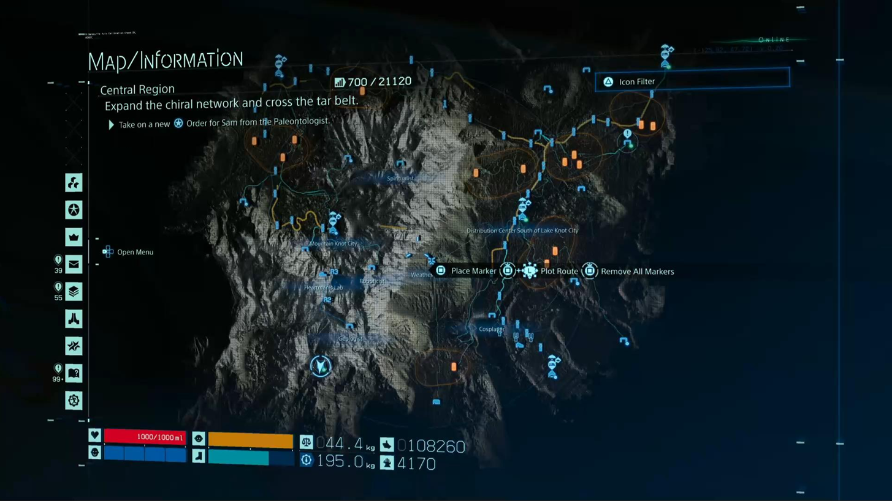
Death Stranding · 2019第一代：高度图 + 视差
缩远时平滑、信息明确；靠近后会暴露高度图分辨率，桥下、悬挑与垂直结构也无法真正成立。
PART 01 · MAP SAMPLING
按照 GDC 演讲的原始顺序，拆解《死亡搁浅 2》如何获取地图 3D 数据，以及我们在 UE 中如何复现这条采样路径。
01 · DESIGN CONTEXT

Death Stranding · 2019缩远时平滑、信息明确；靠近后会暴露高度图分辨率，桥下、悬挑与垂直结构也无法真正成立。
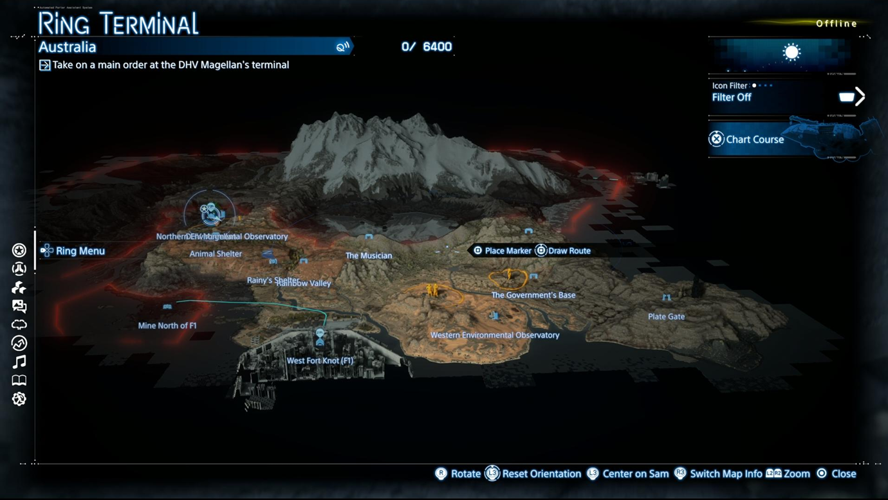
Death Stranding 2 · Ring Terminal地图不再只是带纵深感的平面，而要让玩家直接读出陡坡、死胡同和复杂建筑空间。
02 · REQUIREMENTS
玩家需要从地图直接判断陡坡、断崖、死胡同和建筑空间。
地图数据应从最终游戏世界自动获得，而不是再制作一套地图专用资产。
地图叠加在现有世界资源之上，必须保持较小体积并支持快速加载。
缩放与导航不能引发卡顿，渲染成本必须与游戏其余系统共存。
03 · TARGET EXPERIENCE
视角拉远，保留完整世界的自然全貌；视角拉近，逐渐看见构成世界的离散几何。
地形、路线、设施和区域边界共同服务导航决策。
山脊、桥梁、峡谷和建筑不再被压扁到单一高度层。
为了得到这种地图，第一步不是决定“怎么画体素”，而是决定“如何从最终世界获得足够完整的 3D 数据”。
04 · OPTIONS
从 Height + Color 的俯视投影恢复三维地形。
简单地形有效，但无法表达多层空间。直接导出游戏世界中已放置的 Mesh 实例。
几何精确，但拿不到最终着色结果。从多个摄像机视角渲染世界区块，并由 G-buffer 生成三维点。
同时获得空间、颜色和其他表面信息。决策标准：不仅要有几何，还要自动反映游戏中最终可见的材质混合、贴花和环境状态。
05 · ATTEMPT A
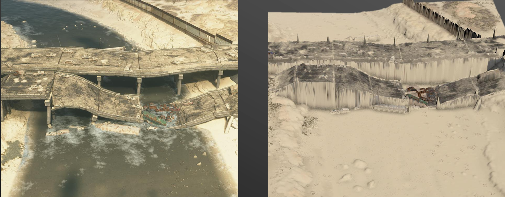
Game View ↔ Height + Color Map对普通地表，它简单、稳定、生成快速；但同一个平面位置只能保存一个高度。
GDC 中仍将它保留为正式体素地图完成前的临时占位方案。
06 · ATTEMPT B
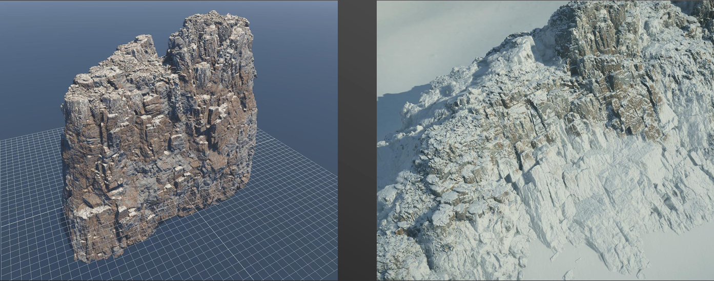
Rocks Asset ↔ Positioned High On A Mountain导出 Mesh 可以得到非常精确的几何，但它绕过了游戏运行时的最终材质组合。
图中的同一岩石被放到高山后，最终世界会出现积雪；仅导出原资产无法得到这层结果。
07 · FINAL CHOICE
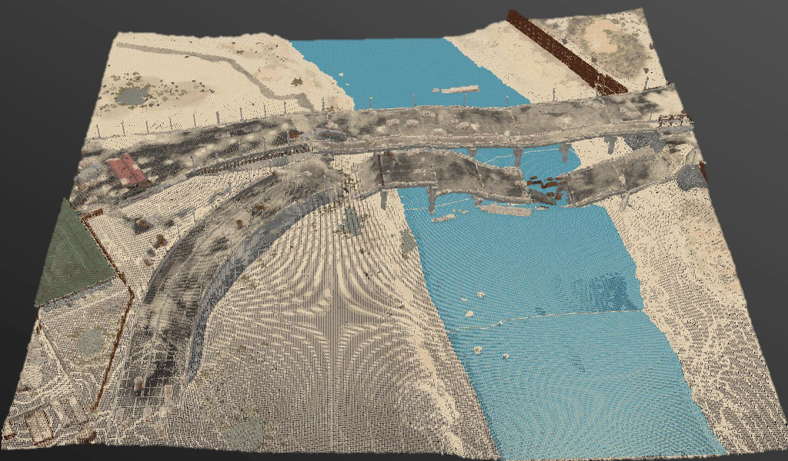
Bake Point Cloud ✓这条路线同时满足：真实三维、无需额外美术资产、可继续压缩。
08 · CAPTURE PROCESS
在区块上方半球均匀放置摄像机，覆盖主要外部表面。
摄像机沿三个坐标轴穿过区块，补足桥下、峡谷和建筑内部。
将浮点点云量化为区块包围盒内的整数索引，并合并重复位置。
09 · HEMISPHERE PASS
10 · XYZ SLICE PASS
11 · G-BUFFER TO POINTS
GDC 给出的是原则：从 G-buffer 生成 3D 点。我们的实现将它拆成可验证的五步。
物理水体采样属于 GDC 原方案；当前项目主线先完成几何与颜色采集，水体可作为独立数据通道扩展。
12 · POINT GRID
不再保存每个点的浮点世界坐标，而是记录它在区块 Bounding Box 内的整数索引。
整数索引替代浮点坐标。
重复观测合并到固定位置。
为后续体素化与渲染准备统一输入。
PART 02 · VOXEL RENDERING
关键不是“画立方体”，而是规划一份 Shader 能直接消费的紧凑数据，并让每个 Billboard 像素重建真正的体素表面。
13 · RENDERING CONSTRAINTS
GDC 决策：把体素视为粒子，而不是传统静态几何；数据必须能顺序读取、易于上传并直接驱动实例化绘制。
14 · DRAWING A VOXEL
几何直观，但每个体素产生大量顶点和三角形，无法扩展到千万级。
REJECTED减少部分面，但提交量仍与体素数线性增长，性能改善有限。
REJECTED用平面保守覆盖屏幕区域，在 Pixel Shader 中做 Ray–Box 求交恢复立方体。
SELECTED15 · VOXEL BLOCK
4 × 4 × 4 = 64
局部体素空间
顶点摊销：64 个体素共享一个 Quad，Block 固定只提交 4 顶点 / 2 三角形；体素数量不再决定顶点数量。
16 · BLOCK LEVELS
整个 Block 的 Bounding Box，最便宜但会把空区域视为实心。
2×2×2 粗网格，一个 bit 表示一个 2³ 粗 Cell 是否包含体素。
4×4×4 精细网格，一个 bit 精确对应一个体素。
17 · DATA HIERARCHY
运行时 Shader 不读取树结构：World / Region 在加载阶段整理，GPU 最终只消费连续的 BlockData 与 VoxelData。
18 · MEMORY MODEL
B = 非空 Block 数，V = 占用体素数。
空 Block 不进入 Buffer；空体素不保存属性。
19 · BUFFER OVERVIEW
描述 Block 在哪里、哪些 Cell 存在，以及属性流从哪里开始。
只保存存在体素的渲染属性，按 Block 和 LocalBit 升序紧凑排列。
… compact attribute stream …
20 · WORD 0 LAYOUT
21 · WORD 1–2 LAYOUT
一个 bit 只表示“是否存在”，不直接存颜色；属性由紧凑 VoxelDataBuffer 提供。
22 · WORD 3 LAYOUT
每个 Block 占用数不同，不能用 BlockIndex × 64；必须保存前缀和起点。
23 · VOXEL ATTRIBUTE
Specular + Roughness → 1 byte演讲只确认二者共享剩余 8 bit，未公开各自具体分配。R=34 G=78 B=A6 Extra=C0PackedData = 0xC0A67834位模式固定，Extra8 的业务含义可以后续升级。24 · SPARSE ADDRESSING
HitBit = 18
18 之前共有 7 个占用 bit。
Offset = PopCount(Mask & BitsBelow(18))Offset = 7ColorIndex = RenderStartIndex + 7属性流只包含存在体素，因此“命中位之前有几个 1”就是紧凑数组内偏移。
25 · CPU BUILDER
26 · GPU UPLOAD
27 · VERTEX STAGE
28 · PIXEL STAGE A
29 · PIXEL STAGE B
2×2×2 粗 Cell，读取 8-bit CoarseMask，循环上限 8。
4×4×4 精细 Cell，读取 64-bit FineMask，循环上限 64。
30 · PIXEL STAGE C
Camera + RayDir × HitT
由 DDA 跨越轴与方向决定
当前项目执行简单定向光照
不使用 Billboard 平面深度
31 · DETAIL A
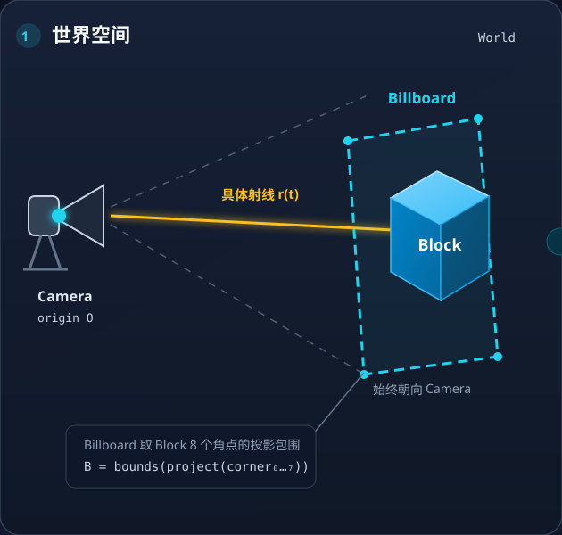
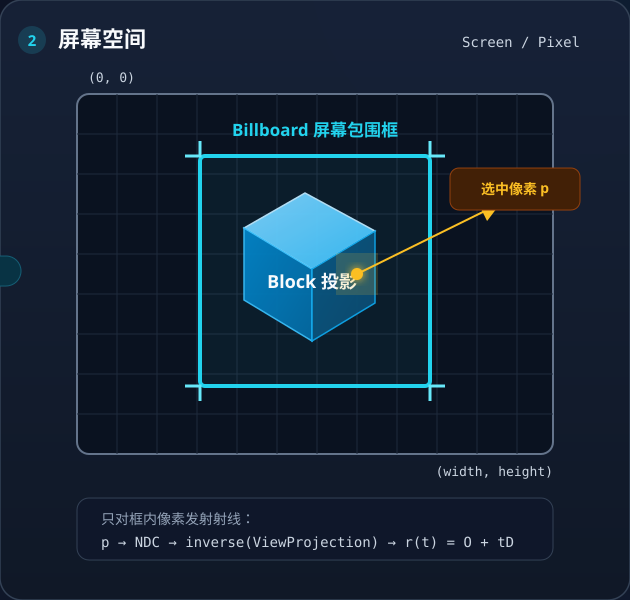
32 · DETAIL B
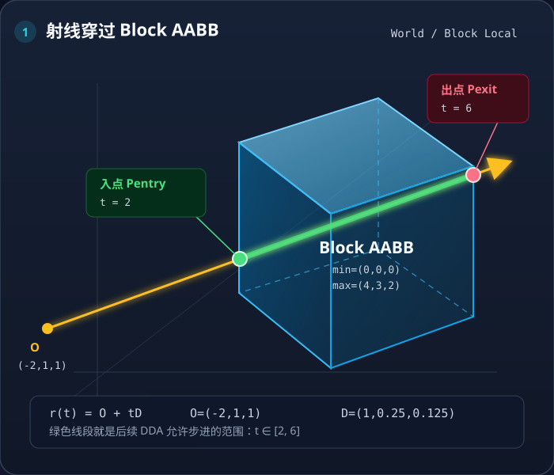
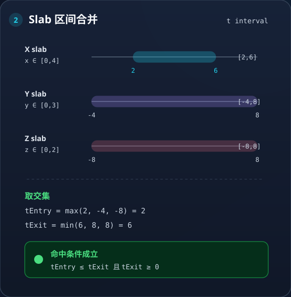
TEntry ≤ TExit 且 TExit ≥ 0。绿色线段就是后续允许访问的范围。33 · EDGE CASE
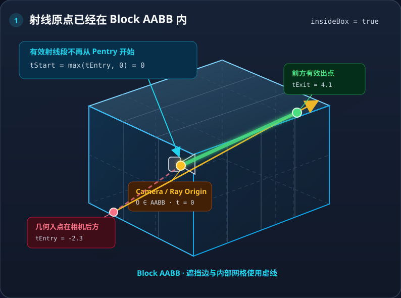
TEntry < 0 < TExit，不能沿负 t 回溯不可见体素。TExit。34 · MISS BRANCHES
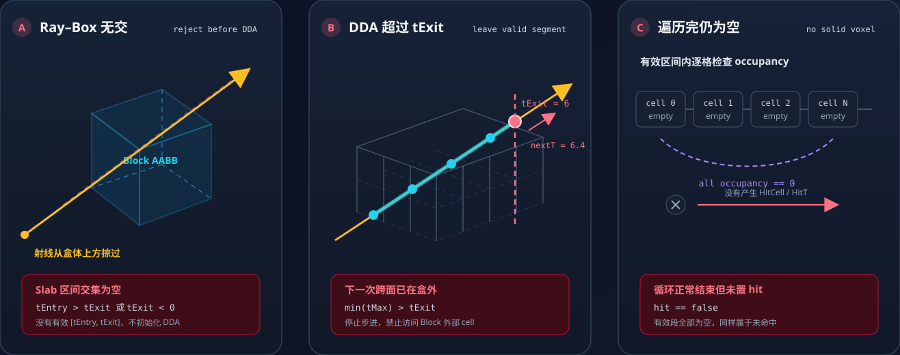
35 · DETAIL C
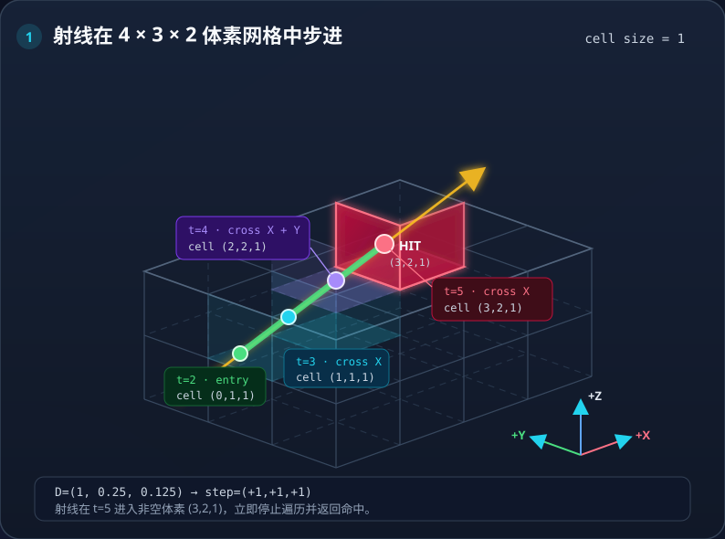
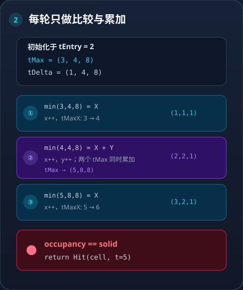
HitCell + HitT。36 · DDA TIE BREAK
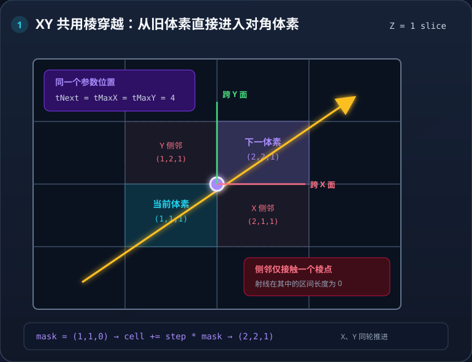
TMaxX == TMaxY 表示射线正穿过共享棱；只选一个轴会产生轴优先级偏差。37 · DETAIL D
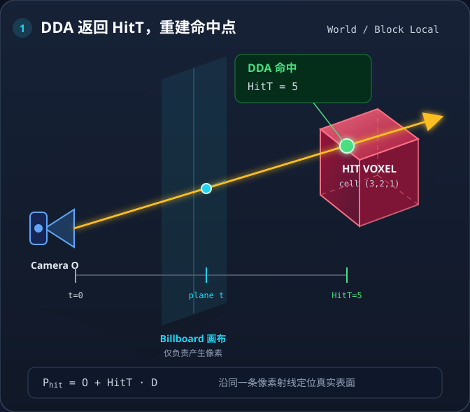
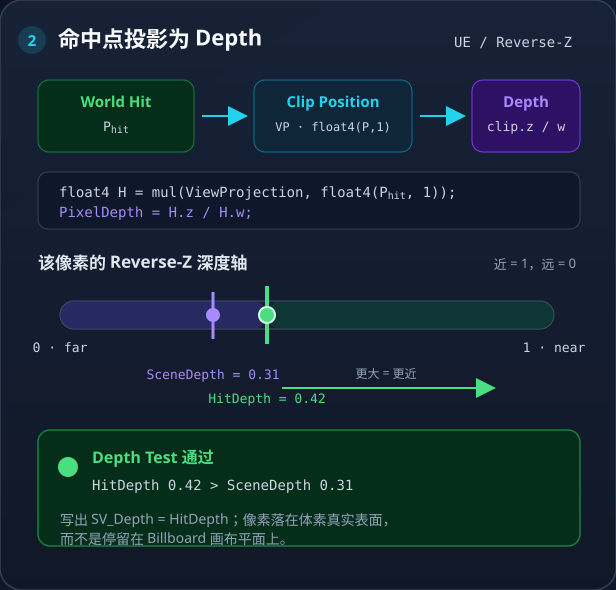
38 · DETAIL E
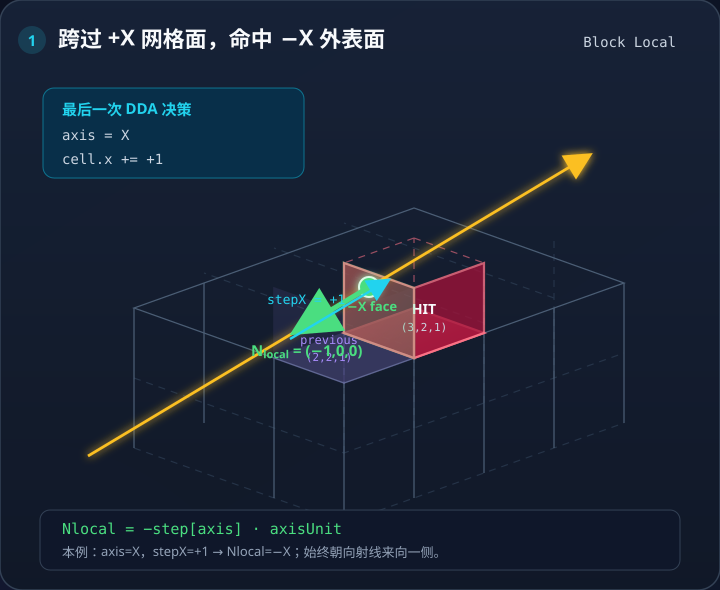
NLocal = −Step[Axis] × AxisUnit，再转换到世界空间参与光照。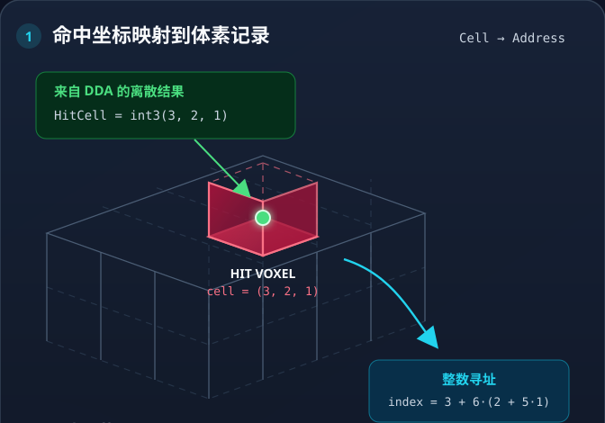
HitBit = x | y<<2 | z<<4ColorIndex = RenderStartIndex + PopCountBelow64(HitBit)39 · COMPLETE PIPELINE
一份紧凑数据同时回答三个问题：Block 在哪里、哪些体素存在、命中后去哪里读属性。
8-bit 粗 Mask + 24-bit 位置 + 64-bit 精细 Mask + 32-bit 属性起点。
RGB24 + Extra8，仅为占用体素保存。
Pixel Shader 通过 Ray–Box 与 DDA 重建最多 64 个体素。